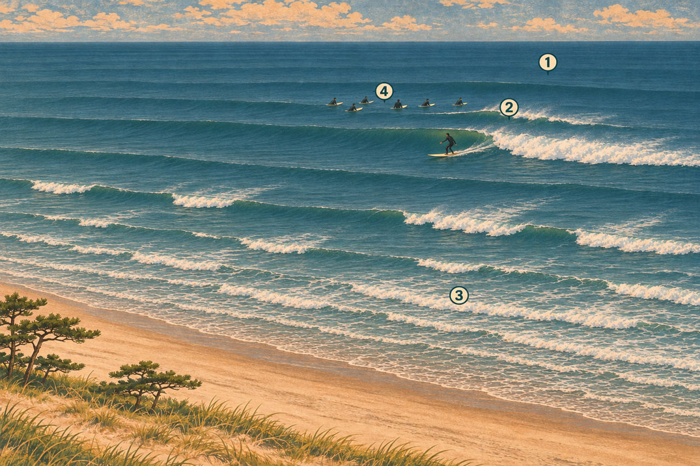

水面のゾーン
ビーチブレイクのアウトサイド、ブレイク、インサイドとラインナップ。

- 1. アウトサイド
- アウトサイドは主なブレイクゾーンより沖側の海面です。ここではうねりはまだ砕けておらず、近づくセットを早めに見つけられることがあります。
- 2. ブレイク
- ブレイクは浅い場所に入った波が急になり、崩れ始めるゾーンです。ビーチブレイクでは動くサンドバーによって、ピークごとに岸からの距離が変わります。
- 3. インサイド
- インサイドは主なラインナップとブレイクゾーンより岸側です。砕けた波が白波として進み、いったん整って岸寄りで再び割れる波もあります。
- 4. ラインナップ
- ラインナップはブレイクの沖側の縁に近く、サーファーが波を待って位置を取るエリアです。一直線に並ぶ場所ではなく、セットやコンディションに合わせてピークの間を移動します。